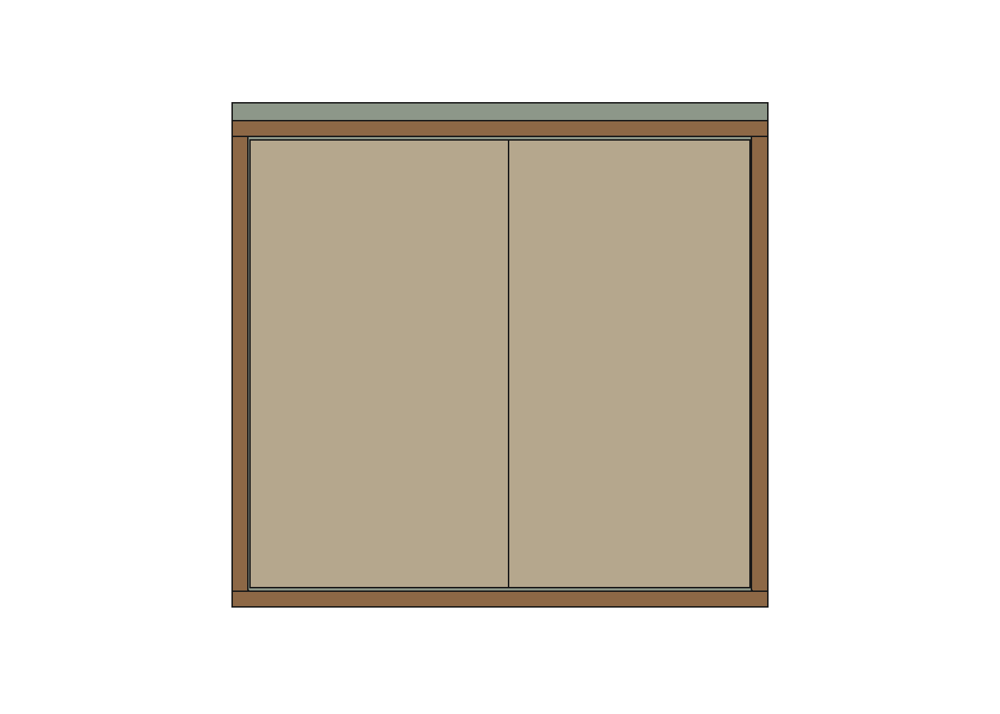
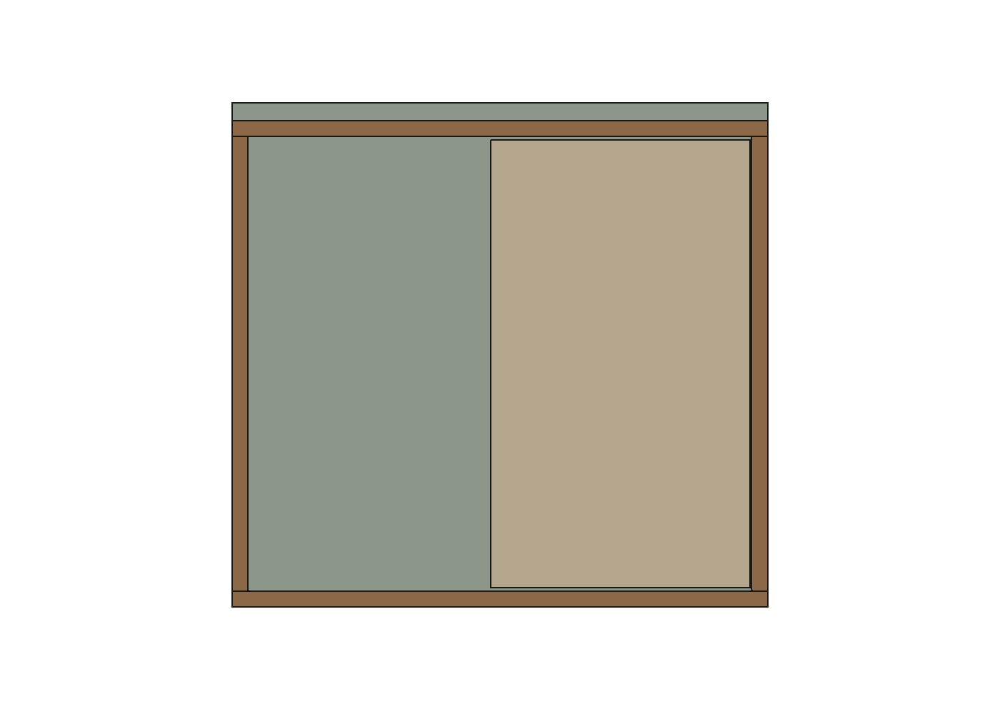

Detalhamento mais recente: R02 — fixação, ferragens e acesso ao sifão. Esta página R01 permanece como histórico.
Estudo geométrico R01 — R42 principal preservada. O curso dos painéis elimina a interferência estudada, sem invadir o espaço interno. A montagem executiva ainda não está liberada.
Caixa original mantida. As portas de giro e suas quatro dobradiças são substituídas, nesta proposta, por duas folhas de correr em moldura externa. A moldura serve de apoio aos trilhos; sua ligação estrutural à caixa precisa ser detalhada. O estudo foi autorizado pelo usuário.


Imagens do FreeCAD. Puxadores, carros, guias e batentes ainda não representados. Cores distinguem componentes; não especificam acabamento.
| Conferência | Resultado |
|---|---|
| Envelope interno preservado | 564 × 382 × 509 mm; 109,66 litros brutos, sem descontar hidráulica |
| Invasão do envelope pelos novos painéis e apoios | 0 mm³ |
| Folhas propostas | 2 × 290 × 502 × 18 mm; transpasse de 20 mm |
| Curso de cada folha | 270 mm; acesso livre de 272 mm por lado, um lado de cada vez |
| Profundidade acrescentada | Moldura 50 mm à frente das frentes antigas, 20 mm além da bancada |
| Folga à porta de entrada existente no modelo | 70 mm até a moldura, para a folha ideal de 700 mm na posição salva |
| Varredura contínua dos painéis | Sem interseções com os sólidos visíveis próximos mantidos da R42 |
| Integridade | Sem formas inválidas; hash do arquivo principal inalterado |
Rometal RO-25, configuração sobreposta para painel de 18 mm: espaço entre painéis de 12 mm; rasgos de 8 × 8 mm; altura da folha igual ao vão menos 7 mm. Referência: manual oficial, revisão 11 (cópia consultada). A capacidade publicada de 30 kg é do sistema; não certifica os apoios propostos. Os sólidos cinza representam os rasgos, não o perfil real do fabricante.
Interseção exata dos volumes varridos pelos painéis durante todo o deslocamento linear, além dos quatro apoios fixos, contra folhas sólidas visíveis próximas da R42. As portas de giro e suas dobradiças antigas são excluídas por serem substituídas. Os painéis têm planos separados por 12 mm. Não foram simulados componentes de ferragem ainda ausentes, maçaneta da porta de entrada ou abertura dinâmica dessa porta.
A folga depende da representação atual: estender hipoteticamente a folha de entrada de 700 para 750 mm reduz a margem longitudinal de 70 para 20 mm; com 800 mm haveria sobreposição de 30 mm. Esses cenários não são medidas do imóvel.
Abrir estudo FreeCAD · Resultados geométricos · Script reproduzível
Conclusão: opção viável geometricamente na representação atual, com armazenamento preservado e acesso parcial. Não marcar como resolvido nem aplicar ao principal antes de fechar as pendências de montagem.